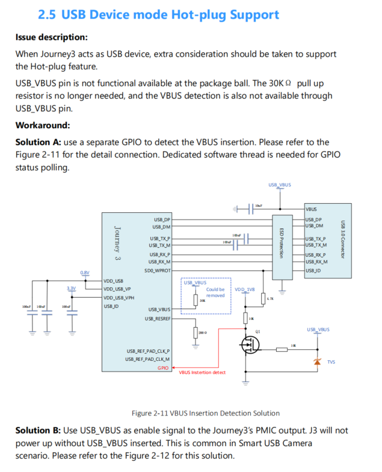

8.8.1. USB常见问题(FAQ)
8.8.1.1. 主机
usb供电相关
usb控制器和phy需要3路电, 两路0.8v(VDD_USB, VDD_USB_VP), 一路3.3v电(VDD_USB_VPH)
vbus 5v供电是板级供电, 现在不需要接进芯片usb phy的vbus管脚, 芯片的phy vbus管脚未出球
如何切换到主模式?
如果支持otg, 插入otg线, 通过usb id系统会切换usb模式到主模式
sdb开发板开机不插micro-b usb线, 默认为主模式
手动命令行切换, echo host > /sys/devices/platform/soc/b2000000.usb/b2000000.dwc3/role
8.8.1.2. 从设备
如何切换到设备模式?
大部分开发板开机即为设备模式(sdb开发板未接usb线开机为主模式)
手动命令行切换, echo device > /sys/devices/platform/soc/b2000000.usb/b2000000.dwc3/role
一些场景的usb-gadget设备
adb - 开发板开机默认为adb模式 (sdb需插着usb线开机), 命令行控制如下
service adbd stop service adbd start
mass storage
service adbd stop /etc/init.d/usb-gadget.sh start msd
Ethernet
service adbd stop /etc/init.d/usb-gadget.sh start rndis
uvc 简单测试用例
service adbd stop /etc/init.d/usb-gadget.sh start uvc-rndis usb_webcam -e 2 -t 10 -b
8.8.1.3. 热插拔(x3m做设备)
vbus_pin?
由于芯片usb phy的vbus没有出球, vbus需要接个gpio管脚, 否则影响usb3.0热插拔。
具体参考硬件文档的 ES-EN-2511-1-J3_Hardware_Reference_Design_Errata_V0P4.pdf
软件patch可参考 0001-usb-gadget-bug-XJ3-2741-fix-usb-is-t-recognized-when.patch
*更新: usb2.0/3.0 都必须接下gpio口, 否则都缺失了拔出的disconnect事件。…

8.8.1.4. OTG
id_pin
id_pin硬件设计需要强制接在sd0_wrpt管脚
id_pin 低电平 - 主机模式
id_pin 高电平 - 设备模式
id_pin轮询模式 请参考patch 0001-usb-extcon-usb-gpio-bug-XJ3-3477-add-poll-mode-for-e.patch
进uboot
setenv extra_bootargs extcon-usb-gpio.id_poll_mode=1
saveenv
Reset